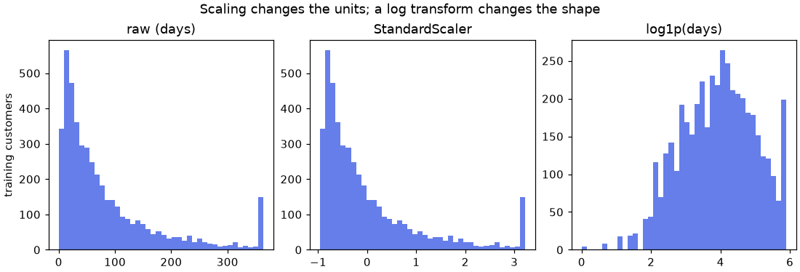

🧹 Lesson 2.1: Impute, Scale and Encode
Real tables have gaps, columns on wildly different scales, and words where models expect numbers: learn the three transformers that fix each problem, and the one object that applies them all to the right columns.
🎯 Learning Objectives
By the end of this lesson, you will be able to:
- Fill missing values with
SimpleImputer, and keep the fact that a value was missing withadd_indicator=True - Choose between
StandardScaler,MinMaxScaler,RobustScalerand a log transform, and explain what each one changes - Encode categories with
OneHotEncoder(including categories never seen in training) and ordered categories withOrdinalEncoder - Build a
ColumnTransformerthat sends each group of columns to the right transformer, fitted on the training data only - Train a model on all 16 usable churn columns, not just the 10 clean numeric ones
In This Lesson
🧭 Models Only Eat Numbers
In Module 1 you trained every model on ten tidy numeric columns, and you left the rest of the churn table on the shelf. That was a convenience, not a choice anyone would make on purpose. The columns you skipped include where each customer shops, their loyalty tier, their favorite category and how many marketing emails they opened. Some of those might matter. Today you bring them in.
Three things stand in the way, and Lesson 1.1's mistakes already showed you two of them: a text column fails with could not convert string to float: 'Bend', and a column with gaps fails with Input X contains NaN. The third problem is quieter: columns measured in thousands of dollars sit next to fractions between 0 and 1, which upsets models built on weighted sums and distances.
💡 Mental Model: Mise en Place
Before a restaurant opens, the kitchen does its mise en place: every ingredient washed, chopped and measured into its own bowl, so the cooks can work fast and the dish tastes the same every night. Preprocessing is mise en place for a model. Each kind of ingredient gets its own treatment (you peel carrots, you do not peel eggs), and the prep recipe is written down once, then followed exactly for every new order.
That last part is the one beginners miss. The prep is learned from the training data (which value fills a gap, what the average spend is, which stores exist) and then applied unchanged to the test data and to every future customer. It is the same fit then transform rule you used with StandardScaler in Lesson 1.1, now applied to every column.
Start by loading the table and choosing the columns. The 11 numeric columns are the ten from Lesson 1.1 plus email_opens_90d, which has gaps. The five categorical columns are text. Three columns stay out on purpose: customer_id (an ID, not a property of the customer), signup_date (Lesson 2.3 turns dates into features) and cancellation_reason (the leak from Lesson 1.2).
import numpy as np
import pandas as pd
from sklearn.model_selection import train_test_split
pd.set_option("display.width", 150)
pd.set_option("display.max_columns", 20)
customers = pd.read_csv("data/customers_churn.csv")
numeric = ["tenure_months", "orders_12m", "spend_12m", "avg_order_value", "days_since_last_order",
"returns_12m", "return_rate", "support_tickets_12m", "discount_share", "app_user",
"email_opens_90d"]
categorical = ["home_store", "region", "age_group", "loyalty_tier", "preferred_category"]
X = customers[numeric + categorical]
y = customers["churned"]
X_train, X_test, y_train, y_test = train_test_split(X, y, test_size=0.25, stratify=y, random_state=42)
print(X_train.shape, X_test.shape)
print(X_train.dtypes.value_counts())Output
(4500, 16) (1500, 16)
int64 6
float64 5
str 5
Name: count, dtype: int64Same split as every lesson so far (same test_size, stratify and random_state, so the same 1,500 test customers), now with 16 columns. In pandas 3, text columns have the dtype str. Split first, before any preparation: everything you learn about the data from now on comes from X_train alone.
✅ One Transformer per Problem
Gaps are filled by an imputer. Mismatched units are fixed by a scaler. Text categories are turned into numbers by an encoder. All three are scikit-learn transformers with the fit and transform methods you already know.
🕳️ Filling Gaps: Imputation
First, find the gaps. Count them on the training rows only.
missing = X_train.isna().sum()
print(missing[missing > 0])
print(f"rows with at least one gap: {X_train.isna().any(axis=1).sum()} of {len(X_train)}")Output
email_opens_90d 419
age_group 359
dtype: int64
rows with at least one gap: 751 of 4500Two columns have gaps: age_group (customers who never gave their age) and email_opens_90d (customers whose email tracking is missing). The simplest fix, dropna(), would throw away about one training customer in six, and it cannot help at prediction time: when a new customer arrives without an age, you still need a churn score for them.
Before filling anything, ask whether the gap itself means something. Compare the churn rate of customers with and without an email count:
email_missing = X_train["email_opens_90d"].isna()
print(y_train.groupby(email_missing).mean().round(3))Output
email_opens_90d
False 0.156
True 0.253
Name: churned, dtype: float64Customers with no email count churned far more often than the others. Maybe they unsubscribed, maybe they use an old address; either way, being missing is a clue. Keep that in mind.
SimpleImputer
SimpleImputer fills each gap with one number learned from the training data: the column's "mean", "median", "most_frequent" value, or a "constant" you choose. For a skewed count like email opens, the median is the safer middle, because a few very active readers drag the mean up.
from sklearn.impute import SimpleImputer
imputer = SimpleImputer(strategy="median").set_output(transform="pandas")
imputer.fit(X_train[["email_opens_90d"]])
print("learned fill value:", imputer.statistics_)
filled = imputer.transform(X_test[["email_opens_90d"]])
print(X_test["email_opens_90d"].isna().sum(), "gaps in the test column before,",
filled["email_opens_90d"].isna().sum(), "after")Output
learned fill value: [6.]
118 gaps in the test column before, 0 afterThe imputer learned one number from the training rows (stored in statistics_, with the trailing underscore of a learned attribute) and used it to fill the test rows. The test set's own median was never computed. That is the fit-on-train rule again, and it matters for the same reason: next month's customers arrive one at a time, and a single customer has no median.
Keep the Clue: add_indicator
Filling a gap with the median erases the fact that it was a gap: a customer who opened 6 emails and a customer with no record now look identical. add_indicator=True adds a 0/1 column that remembers which rows were filled, so the model can still use the clue you found above.
imputer_flag = SimpleImputer(strategy="median", add_indicator=True).set_output(transform="pandas")
flagged = imputer_flag.fit_transform(X_train[["email_opens_90d"]])
print(flagged.columns.tolist())
print(flagged[email_missing].head(3))Output
['email_opens_90d', 'missingindicator_email_opens_90d']
email_opens_90d missingindicator_email_opens_90d
3996 6.0 1.0
426 6.0 1.0
3846 6.0 1.0Gaps in Text Columns
For a text column, the median makes no sense. Use strategy="most_frequent" (the commonest category) or strategy="constant" with a label of your choice, which keeps "unknown" as an honest category of its own:
age_imputer = SimpleImputer(strategy="constant", fill_value="unknown").set_output(transform="pandas")
ages = age_imputer.fit_transform(X_train[["age_group"]])
print(ages["age_group"].value_counts())Output
age_group
35-44 934
25-34 899
45-54 755
55-64 649
18-24 458
65+ 446
unknown 359
Name: count, dtype: int64💡 Which Strategy?
There is no universally right fill value; there is a defensible one. Median for skewed numbers, mean for roughly symmetric ones, a constant such as "unknown" when "not given" is its own kind of answer, and add_indicator=True whenever missingness might carry signal. Smarter imputers exist (KNNImputer fills from similar customers), and some models, such as HistGradientBoostingClassifier in Lesson 5.3, handle gaps natively. Because every choice is a transformer, you can compare them fairly with cross-validation, which Lesson 2.2 makes easy.
📏 Scaling: New Units, Same Shape
You met StandardScaler in Lesson 1.1: subtract the training mean, divide by the training standard deviation. It has two common siblings, and each answers a slightly different question:
| Scaler | Formula, per column | Good for |
|---|---|---|
StandardScaler | (x - mean) / standard deviation | The default for linear models, SVMs and neural networks |
MinMaxScaler | (x - min) / (max - min) | When a model or a chart needs values from 0 to 1 |
RobustScaler | (x - median) / interquartile range | Columns with extreme outliers, which would distort a mean and a standard deviation |
Try all three on spend_12m, a column with a long tail of big spenders:
from sklearn.preprocessing import StandardScaler, MinMaxScaler, RobustScaler
spend = X_train[["spend_12m"]]
for scaler in [StandardScaler(), MinMaxScaler(), RobustScaler()]:
scaled = scaler.fit_transform(spend)
print(f"{type(scaler).__name__:15s} min {scaled.min():6.2f} median {np.median(scaled):5.2f} max {scaled.max():5.2f}")Output
StandardScaler min -1.30 median -0.18 max 5.38
MinMaxScaler min 0.00 median 0.17 max 1.00
RobustScaler min -0.78 median 0.00 max 3.89Same column, three different number lines. MinMaxScaler squeezes everything into 0 to 1, so most customers end up crowded near the bottom because of a few large spenders. RobustScaler puts the median at exactly 0. None of them changes which customer spends more than which: scaling is a change of units, like switching from dollars to thousands of dollars.
That also means scaling does not change the shape of a distribution. A skewed column stays skewed. If the shape is the problem, transform the values themselves, most often with a logarithm. np.log1p computes log(1 + x), which is safe for zeros. Compare the three versions of days_since_last_order:
import matplotlib.pyplot as plt
days = X_train[["days_since_last_order"]]
versions = {
"raw (days)": days.to_numpy().ravel(),
"StandardScaler": StandardScaler().fit_transform(days).ravel(),
"log1p(days)": np.log1p(days).to_numpy().ravel(),
}
fig, axes = plt.subplots(1, 3, figsize=(10, 3.4), layout="constrained")
for ax, (title, values) in zip(axes, versions.items()):
ax.hist(values, bins=40, color="#667eea")
ax.set_title(title)
print(f"{title:15s} skew {pd.Series(values).skew():5.2f}")
axes[0].set_ylabel("training customers")
fig.suptitle("Scaling changes the units; a log transform changes the shape")
plt.show()Output
raw (days) skew 1.71
StandardScaler skew 1.71
log1p(days) skew -0.19
Do you need the log? It depends on the model. A logistic regression adds up weighted features, so a long tail lets a few extreme customers pull hard on the weights, and a log can help. Can, not will: Lesson 2.2 tests it on this data, and the answer may surprise you. Tree-based models only ask "is this value above some threshold?", so neither scaling nor a log changes what they can learn. Lesson 2.2 shows how to wrap np.log1p as a transformer with FunctionTransformer, and Lesson 2.3 creates new features of this kind.
| Model family | Needs scaling? | Why |
|---|---|---|
| Linear and logistic regression (Module 3) | Yes, in practice | The solver converges faster, and regularization treats all weights fairly only when columns share a scale |
| k-nearest neighbors, SVMs, K-Means (Modules 4 and 8) | Yes | They measure distances, and a column in thousands drowns out a column in fractions |
| Neural networks (Module 10) | Yes | Gradient descent behaves badly on unscaled inputs |
| Decision trees, forests, boosting (Module 5) | No | A threshold question gives the same answer in any units |
🏷️ Encoding Categories
A model cannot multiply a weight by "Bend". The standard fix is one-hot encoding: one new 0/1 column per category, with a 1 in the column that matches the row. A customer of the Bend store gets home_store_Bend = 1 and 0 in the other four store columns.
from sklearn.preprocessing import OneHotEncoder
onehot = OneHotEncoder(sparse_output=False).set_output(transform="pandas")
stores = onehot.fit_transform(X_train[["home_store"]])
print(onehot.categories_)
print(pd.concat([X_train[["home_store"]], stores], axis=1).head(4))Output
[array(['Asheville', 'Bend', 'Boise', 'Flagstaff', 'Online'], dtype=object)]
home_store home_store_Asheville home_store_Bend home_store_Boise home_store_Flagstaff home_store_Online
1556 Bend 0.0 1.0 0.0 0.0 0.0
965 Flagstaff 0.0 0.0 0.0 1.0 0.0
5145 Online 0.0 0.0 0.0 0.0 1.0
3004 Boise 0.0 0.0 1.0 0.0 0.0fit learned the list of categories from the training data (categories_), and transform built one column per category, named column_category. By default OneHotEncoder returns a sparse matrix, a memory-saving format that stores only the 1s. That is great for thousands of categories but cannot become a DataFrame, so pass sparse_output=False whenever you use pandas output.
A Category You Have Never Seen
What happens when Pinecrest opens a store in Reno, and a Reno customer needs a churn score? By default the encoder refuses (you will see the error in Common Mistakes). With handle_unknown="ignore" it encodes an unknown category as all zeros: "none of the stores I know".
safe_onehot = OneHotEncoder(sparse_output=False, handle_unknown="ignore").set_output(transform="pandas")
safe_onehot.fit(X_train[["home_store"]])
new_customers = pd.DataFrame({"home_store": ["Bend", "Reno"]})
print(safe_onehot.transform(new_customers))Output
home_store_Asheville home_store_Bend home_store_Boise home_store_Flagstaff home_store_Online
0 0.0 1.0 0.0 0.0 0.0
1 0.0 0.0 0.0 0.0 0.0Missing values get similar treatment: OneHotEncoder treats a gap as one more category. That gives you a third way to handle the missing ages, with no imputer at all:
age_onehot = OneHotEncoder(sparse_output=False).fit(X_train[["age_group"]])
print(age_onehot.get_feature_names_out())Output
['age_group_18-24' 'age_group_25-34' 'age_group_35-44' 'age_group_45-54'
'age_group_55-64' 'age_group_65+' 'age_group_nan']get_feature_names_out() works on every transformer and tells you what each output column is. The last column, age_group_nan, is 1 exactly for the customers who never gave an age.
Ordered Categories: OrdinalEncoder
Some categories have a natural order. Loyalty tiers go Basic, then Silver, then Gold. OrdinalEncoder turns such a column into a single column of 0, 1, 2, which keeps the order and adds only one column. You must spell the order out, because the default is alphabetical (Common Mistakes shows why that is a silent disaster):
from sklearn.preprocessing import OrdinalEncoder
tier_encoder = OrdinalEncoder(categories=[["Basic", "Silver", "Gold"]]).set_output(transform="pandas")
tiers = tier_encoder.fit_transform(X_train[["loyalty_tier"]])
check = pd.DataFrame({"tier": X_train["loyalty_tier"], "code": tiers["loyalty_tier"]})
print(check.drop_duplicates().sort_values("code"))Output
tier code
1556 Basic 0.0
965 Silver 1.0
2088 Gold 2.0| Column | Encoder | Reason |
|---|---|---|
loyalty_tier | OrdinalEncoder with an explicit order | Basic is below Silver is below Gold |
home_store, region, preferred_category | OneHotEncoder | No order: Boise is not "more" than Bend |
age_group | OneHotEncoder (it has gaps, which become their own column) | The groups are ordered, but churn need not rise or fall steadily with age, and one-hot lets each group have its own effect |
⚠️ Why Not pd.get_dummies?
pandas can one-hot encode too, with pd.get_dummies. It is fine for exploring, but it has no fit: it looks only at the rows you hand it. Encode a batch of new customers that happens to contain only two stores and you get two columns instead of five, and the model refuses them. An encoder remembers the training categories and always produces the same columns. Common Mistakes shows the error.
🧩 ColumnTransformer: the Whole Table at Once
You now have a treatment for every column. Applying them one by one and gluing the results together by hand would be slow and error-prone, and you would have to repeat it, in the same order, for the test set and every new customer. ColumnTransformer does it in one object: you give it a list of (name, transformer, columns) triples, it fits each transformer on its own columns, and it places the results side by side.
from sklearn.compose import ColumnTransformer
complete = numeric[:-1] # the ten numeric columns without gaps (all but email_opens_90d)
nominal = ["home_store", "region", "age_group", "preferred_category"]
first_try = ColumnTransformer([
("scale", StandardScaler(), complete),
("email", SimpleImputer(strategy="median", add_indicator=True), ["email_opens_90d"]),
("tier", OrdinalEncoder(categories=[["Basic", "Silver", "Gold"]]), ["loyalty_tier"]),
("onehot", OneHotEncoder(sparse_output=False, handle_unknown="ignore"), nominal),
]).set_output(transform="pandas")
Xt_train = first_try.fit_transform(X_train)
print(Xt_train.shape)
print(Xt_train.columns[8:16].tolist())Output
(4500, 40)
['scale__discount_share', 'scale__app_user', 'email__email_opens_90d', 'email__missingindicator_email_opens_90d', 'tier__loyalty_tier', 'onehot__home_store_Asheville', 'onehot__home_store_Bend', 'onehot__home_store_Boise']Sixteen raw columns became 40 numeric ones. Each output name starts with the name of its branch and a double underscore (scale__, email__, onehot__), so you can always trace a column back to where it came from. Any column you did not list is dropped (the default remainder="drop"). That default is a safety feature: if someone later adds cancellation_reason to the table, it cannot sneak into your model.
Before training anything, check that every output column really is on a comparable scale:
print(Xt_train[["scale__days_since_last_order", "email__email_opens_90d", "tier__loyalty_tier"]].std().round(2))Output
scale__days_since_last_order 1.00
email__email_opens_90d 5.21
tier__loyalty_tier 0.63
dtype: float64The scaled column has a standard deviation of 1, as it should. The imputed email column still runs in raw opens (a spread of about 5), and the tier codes run from 0 to 2. A logistic regression may still fit, but its regularization (Lesson 3.2) penalizes every weight by the same amount, which is only fair when the columns share a scale, and comparing weights across columns becomes meaningless. The email column needed two steps, impute and then scale, and the branches of a ColumnTransformer run side by side, not one after another.
Two Steps in One Branch
To run steps one after another, chain them with make_pipeline. The chain behaves like a single transformer: fit fits the imputer, passes its output to the scaler and fits that too. Put the chain in the branch where the single imputer was. (Lesson 2.2 is entirely about this chaining object, the Pipeline; here you only need it inside a branch.)
from sklearn.pipeline import make_pipeline
preprocess = ColumnTransformer([
("scale", StandardScaler(), complete),
("email", make_pipeline(SimpleImputer(strategy="median", add_indicator=True), StandardScaler()),
["email_opens_90d"]),
("tier", make_pipeline(OrdinalEncoder(categories=[["Basic", "Silver", "Gold"]]), StandardScaler()),
["loyalty_tier"]),
("onehot", OneHotEncoder(sparse_output=False, handle_unknown="ignore"), nominal),
]).set_output(transform="pandas")
Xt_train = preprocess.fit_transform(X_train)
Xt_test = preprocess.transform(X_test)
print(Xt_train.shape, Xt_test.shape)
print("missing values left:", int(Xt_train.isna().sum().sum()), int(Xt_test.isna().sum().sum()))Output
(4500, 40) (1500, 40)
missing values left: 0 0Notice the rhythm: fit_transform on X_train, plain transform on X_test. Every number the preprocessor needs (medians, means, standard deviations, category lists) came from the training rows. Now the payoff: a model that uses all 16 columns, compared with Lesson 1.1's model on the 10 clean ones. ROC AUC (Lesson 1.4) measures how well each model ranks churners above stayers.
from sklearn.linear_model import LogisticRegression
from sklearn.metrics import roc_auc_score
model = LogisticRegression().fit(Xt_train, y_train)
auc_all = roc_auc_score(y_test, model.predict_proba(Xt_test)[:, 1])
ten_scaler = StandardScaler().fit(X_train[complete])
model_10 = LogisticRegression().fit(ten_scaler.transform(X_train[complete]), y_train)
auc_10 = roc_auc_score(y_test, model_10.predict_proba(ten_scaler.transform(X_test[complete]))[:, 1])
print(f"10 clean numeric columns : ROC AUC {auc_10:.3f}")
print(f"all 16 columns, prepared : ROC AUC {auc_all:.3f} accuracy {model.score(Xt_test, y_test):.3f}")Output
10 clean numeric columns : ROC AUC 0.823
all 16 columns, prepared : ROC AUC 0.828 accuracy 0.851An honest result: the extra columns help, but only a little. For this linear model, most of the signal was already in the ten behavioral numbers (recency, discounts, support tickets). That is worth knowing, and you only know it because you could finally try. The new columns matter more to models that can combine features in nonlinear ways (Module 5). Which new column carries weight? Look at the email pair:
coefs = pd.Series(model.coef_[0], index=Xt_train.columns)
print(coefs[["email__email_opens_90d", "email__missingindicator_email_opens_90d", "tier__loyalty_tier"]].round(2))Output
email__email_opens_90d -0.28
email__missingindicator_email_opens_90d 0.16
tier__loyalty_tier 0.39
dtype: float64More email opens push away from churn (negative weight), and the missing-value indicator pushes toward it: the model picked up the clue you found at the start, which plain median filling would have erased. As in Lesson 1.1, read weights as a first impression only. The tier's weight is positive, which looks backwards, since Gold customers churn least. It is not a contradiction: tier is computed from spend and tenure, which are already in the model, so its weight describes only what is left after those columns. Overlapping features make weights hard to read, a theme Module 7 returns to.
⚠️ Still Two Objects to Keep in Step
You now carry a fitted preprocess and a fitted model, and you must always call them in the right order with the right method. Cross-validation (Lesson 1.3) makes this worse: the preprocessor must be refitted inside every fold, or the validation rows leak into the medians and means. Lesson 2.2 fixes both problems by putting the preprocessor and the model into one Pipeline.
⚠️ Common Mistakes
Preprocessing errors are some of the most common in real projects, because they show up when new data arrives, long after the notebook "worked".
1. A Category the Encoder Has Never Seen
strict = OneHotEncoder(sparse_output=False).fit(X_train[["home_store"]])
strict.transform(pd.DataFrame({"home_store": ["Reno"]}))Error
ValueError: Found unknown categories ['Reno'] in column 0 during transformWhat it means: the default handle_unknown="error" refuses any category that was not in the training data. In production this crashes the scoring job the day a new store opens. Fix: handle_unknown="ignore" (all zeros), or "infrequent_if_exist" together with min_frequency, which also groups rare training categories into one "infrequent" column and sends unknown ones there.
2. A Numeric Strategy on a Text Column
SimpleImputer(strategy="median").fit(X_train[["home_store"]])Error
ValueError: Cannot use median strategy with non-numeric data:
could not convert string to float: 'Bend'What it means: there is no median of store names. This usually happens when one imputer is pointed at all the columns at once. Fix: give numeric and text columns separate branches in a ColumnTransformer, with "most_frequent" or "constant" for the text ones.
3. Pandas Output with a Sparse Encoder
OneHotEncoder().set_output(transform="pandas").fit_transform(X_train[["home_store"]])Error
ValueError: Pandas output does not support sparse data. Set sparse_output=False to output pandas dataframes or disable Pandas output via` ohe.set_output(transform="default").What it means: the encoder's default output is a sparse matrix, which a DataFrame cannot hold. Fix: exactly what the message says, OneHotEncoder(sparse_output=False). Keep sparse output for very many categories (such as words in Lesson 11.1), where a dense table would waste memory.
4. pd.get_dummies on New Data
train_dummies = pd.get_dummies(X_train[["home_store"]], dtype=int)
dummy_model = LogisticRegression().fit(train_dummies, y_train)
two_new = pd.get_dummies(pd.DataFrame({"home_store": ["Boise", "Online"]}), dtype=int)
dummy_model.predict(two_new)Error
ValueError: The feature names should match those that were passed during fit.
Feature names seen at fit time, yet now missing:
- home_store_Asheville
- home_store_Bend
- home_store_FlagstaffWhat it means: get_dummies made five columns from the training data but only two from the new rows, because it only sees the categories in front of it. scikit-learn checks the column names and stops you. Fix: use a fitted OneHotEncoder, which always produces the training columns.
5. Letting OrdinalEncoder Choose the Order
alphabetical = OrdinalEncoder().fit(X_train[["loyalty_tier"]])
print(alphabetical.categories_)
print(alphabetical.transform(pd.DataFrame({"loyalty_tier": ["Basic", "Silver", "Gold"]})).ravel())Output (no error, and that is the problem)
[array(['Basic', 'Gold', 'Silver'], dtype=object)]
[0. 2. 1.]What happened: without categories=, the encoder sorts alphabetically, so Gold gets 1 and Silver gets 2. A linear model now believes Silver is "more loyal" than Gold, and nothing warns you. Fix: always pass the order, OrdinalEncoder(categories=[["Basic", "Silver", "Gold"]]). For categories with no order at all (stores, regions), use OneHotEncoder instead.
🛠️ Project: A Model-Ready Customer Table
Pinecrest's analytics team wants a reusable preparation step for the whole customer table, and proof that it copes with the messiness of next month's data: customers who skipped the age question, missing email records, and a store in Reno that opens next month. Build the preprocessor, check it, train a model on it, and score three brand-new customers. Work in a new notebook called lesson_2_1_project. Allow about 40 minutes.
🛠️ Step 1: Load and split, keeping the IDs (5 min)
As in Lesson 1.1's project, split the whole table first so the IDs stay lined up with their rows.
import numpy as np
import pandas as pd
from sklearn.model_selection import train_test_split
customers = pd.read_csv("data/customers_churn.csv")
complete = ["tenure_months", "orders_12m", "spend_12m", "avg_order_value", "days_since_last_order",
"returns_12m", "return_rate", "support_tickets_12m", "discount_share", "app_user"]
nominal = ["home_store", "region", "age_group", "preferred_category"]
features = complete + ["email_opens_90d", "loyalty_tier"] + nominal
train, test = train_test_split(customers, test_size=0.25, stratify=customers["churned"], random_state=42)
X_train, y_train = train[features], train["churned"]
X_test, y_test = test[features], test["churned"]
print(len(features), "features;", len(train), "train rows;", len(test), "test rows")Output
16 features; 4500 train rows; 1500 test rows🛠️ Step 2: Audit the gaps on the training rows (10 min)
For each column with gaps, report how many are missing and the churn rate with and without a value. This tells you which columns deserve a missing-value indicator.
rows = []
for col in X_train.columns[X_train.isna().any()]:
gap = X_train[col].isna()
rows.append({"column": col, "missing": int(gap.sum()), "share": round(gap.mean(), 3),
"churn_if_missing": round(y_train[gap].mean(), 3),
"churn_if_present": round(y_train[~gap].mean(), 3)})
audit = pd.DataFrame(rows)
print(audit)Output
column missing share churn_if_missing churn_if_present
0 email_opens_90d 419 0.093 0.253 0.156
1 age_group 359 0.080 0.159 0.166A missing email count goes with a much higher churn rate; a missing age does not. So the email column gets an indicator, and the age gaps simply become their own one-hot category.
🛠️ Step 3: Build the preprocessor (10 min)
One branch per kind of column. Chain two steps with make_pipeline where a column needs both.
from sklearn.compose import ColumnTransformer
from sklearn.impute import SimpleImputer
from sklearn.pipeline import make_pipeline
from sklearn.preprocessing import OneHotEncoder, OrdinalEncoder, StandardScaler
preprocess = ColumnTransformer([
("scale", StandardScaler(), complete),
("email", make_pipeline(SimpleImputer(strategy="median", add_indicator=True), StandardScaler()),
["email_opens_90d"]),
("tier", make_pipeline(OrdinalEncoder(categories=[["Basic", "Silver", "Gold"]]), StandardScaler()),
["loyalty_tier"]),
("onehot", OneHotEncoder(sparse_output=False, handle_unknown="ignore"), nominal),
]).set_output(transform="pandas")
Xt_train = preprocess.fit_transform(X_train)
Xt_test = preprocess.transform(X_test)
print(Xt_train.shape, Xt_test.shape)Output
(4500, 40) (1500, 40)🛠️ Step 4: Check the output (5 min)
Three quick checks catch most preprocessing bugs: no gaps left, training columns centered exactly, test columns only close to center (because they were transformed with the training numbers).
scaled_cols = [c for c in Xt_train.columns if c.startswith("scale__")]
print("gaps left:", int(Xt_train.isna().sum().sum()), "train,", int(Xt_test.isna().sum().sum()), "test")
print("largest |mean| of scaled train columns:", Xt_train[scaled_cols].mean().abs().max().round(3))
print("largest |mean| of scaled test columns: ", Xt_test[scaled_cols].mean().abs().max().round(3))
print("one-hot columns:", sum(c.startswith("onehot__") for c in Xt_train.columns))Output
gaps left: 0 train, 0 test
largest |mean| of scaled train columns: 0.0
largest |mean| of scaled test columns: 0.055
one-hot columns: 27🛠️ Step 5: Train and compare with the baseline (5 min)
from sklearn.dummy import DummyClassifier
from sklearn.linear_model import LogisticRegression
from sklearn.metrics import roc_auc_score
baseline = DummyClassifier(strategy="prior").fit(Xt_train, y_train)
model = LogisticRegression().fit(Xt_train, y_train)
for name, m in [("baseline", baseline), ("logistic regression", model)]:
auc = roc_auc_score(y_test, m.predict_proba(Xt_test)[:, 1])
print(f"{name:20s} accuracy {m.score(Xt_test, y_test):.3f} ROC AUC {auc:.3f}")Output
baseline accuracy 0.835 ROC AUC 0.500
logistic regression accuracy 0.851 ROC AUC 0.828🛠️ Step 6: Score next month's customers (5 min)
Three new customers arrive as raw rows, with a gap in age, a missing email count and the new Reno store. The same fitted preprocessor and model handle them without any special code.
new = pd.DataFrame({
"tenure_months": [3, 40, 75], "orders_12m": [2, 9, 3], "spend_12m": [150.0, 820.0, 260.0],
"avg_order_value": [75.0, 91.11, 86.67], "days_since_last_order": [200, 20, 160],
"returns_12m": [0, 1, 0], "return_rate": [0.0, 0.05, 0.0], "support_tickets_12m": [3, 0, 2],
"discount_share": [0.45, 0.1, 0.3], "app_user": [0, 1, 0],
"email_opens_90d": [np.nan, 12.0, 2.0], "loyalty_tier": ["Basic", "Silver", "Basic"],
"home_store": ["Reno", "Boise", "Online"], "region": ["West", "Northwest", "Southeast"],
"age_group": [np.nan, "35-44", "65+"], "preferred_category": ["Footwear", "Climbing", "Camp Kitchen"],
}, index=["N1", "N2", "N3"])
scores = pd.Series(model.predict_proba(preprocess.transform(new[features]))[:, 1], index=new.index)
print(scores.round(3))
scores.round(3).rename("churn_probability").to_csv("new_customer_scores.csv")Output
N1 0.886
N2 0.009
N3 0.467
dtype: float64N1 is new, has not ordered in 200 days, leans on discounts, has three support tickets and no app: high risk. N2 is a frequent app user: low risk. The unknown store (Reno) and the unknown region (West) were encoded as all zeros and the gaps were filled, all by the objects you fitted in Step 3.
✅ Project Completion Checklist
- Your gap audit used the training rows only and shows the email-missing churn rate well above the rest
- The preprocessor turns 16 raw columns into 40 numeric ones, with no gaps in either set
- The scaled training columns have a mean of 0; the test columns are close to 0 but not exactly
- Logistic regression beats the baseline's ROC AUC of 0.5 by a wide margin
- Three new customers, one with an unknown store and two with gaps, get scores without errors
new_customer_scores.csvholds the three IDs and their probabilities
🏋️ Hands-on Exercises
These continue in the project notebook, so X_train, preprocess and friends already exist.
🏋️ Exercise 1: Three Fill Values
Fit a SimpleImputer on X_train[["email_opens_90d"]] with each of the strategies "mean", "median" and "most_frequent", and print the fill value each one learned. Why are they different, and which would you defend?
💡 Hint
The learned value is in statistics_[0]. Then look at X_train["email_opens_90d"].skew().
✅ Solution
for strategy in ["mean", "median", "most_frequent"]:
imp = SimpleImputer(strategy=strategy).fit(X_train[["email_opens_90d"]])
print(f"{strategy:14s} {imp.statistics_[0]:.2f}")
print("skew:", round(X_train["email_opens_90d"].skew(), 2))Output
mean 7.28
median 6.00
most_frequent 4.00
skew: 1.32The column is right-skewed: many customers open a handful of emails and a few open dozens. The mean is pulled up by those few, the median sits in the middle of the typical customer, and the most frequent value is the single commonest count. The median is the usual defensible choice for a skewed count. With add_indicator=True, the exact fill value matters even less, because the model can tell filled rows apart.
🏋️ Exercise 2: One Whale Customer
Make a copy of the training spend column and add one made-up customer who spent $250,000 (a data-entry error, perhaps). Fit a StandardScaler and a RobustScaler on it, and print, for each, the scaled value of a good customer who spent $1,500. Which scaler did the single outlier distort?
💡 Hint
pd.concat([X_train[["spend_12m"]], pd.DataFrame({"spend_12m": [250000.0]})]) adds the row. Transform pd.DataFrame({"spend_12m": [1500.0]}) with each fitted scaler.
✅ Solution
from sklearn.preprocessing import RobustScaler
with_whale = pd.concat([X_train[["spend_12m"]], pd.DataFrame({"spend_12m": [250000.0]})], ignore_index=True)
good = pd.DataFrame({"spend_12m": [1500.0]})
for scaler in [StandardScaler(), RobustScaler()]:
clean = scaler.fit(X_train[["spend_12m"]]).transform(good)[0, 0]
dirty = scaler.fit(with_whale).transform(good)[0, 0]
print(f"{type(scaler).__name__:15s} $1,500 customer: {clean:6.3f} without the whale, {dirty:6.3f} with it")Output
StandardScaler $1,500 customer: 2.186 without the whale, 0.227 with it
RobustScaler $1,500 customer: 1.655 without the whale, 1.654 with itOne row out of 4,501 shrank the good customer's standardized value from above 2 (clearly a big spender) to a fraction, because the whale inflated the standard deviation, and every other customer was squashed toward 0 the same way. RobustScaler uses the median and the interquartile range, which one extreme row barely moves. Still, the better fix for a data-entry error is to find and correct it; a robust scaler only limits the damage.
🏋️ Exercise 3: Which Product Is It?
Lesson 1.1's exercise 3 predicted units_sold in data/weekly_demand.csv from six numeric columns and reached an R² of only 0.281, because the model did not know which product each row was. Repeat it with the same split (test_size=0.25, random_state=42), but add product_id and store through a ColumnTransformer: one-hot the two text columns and pass the six numbers through unchanged with the special transformer name "passthrough". Compare R² with and without the category columns.
💡 Hint
A branch can be ("nums", "passthrough", numeric_cols). Fit the ColumnTransformer on the training rows, transform both, then fit LinearRegression.
✅ Solution
from sklearn.linear_model import LinearRegression
demand = pd.read_csv("data/weekly_demand.csv")
demand_numeric = ["price", "discount_pct", "promo", "holiday_week", "avg_high_temp_f", "store_sqft"]
demand_cats = ["product_id", "store"]
D_train, D_test, u_train, u_test = train_test_split(
demand[demand_numeric + demand_cats], demand["units_sold"], test_size=0.25, random_state=42
)
numbers_only = LinearRegression().fit(D_train[demand_numeric], u_train)
print(f"six numbers only R2 = {numbers_only.score(D_test[demand_numeric], u_test):.3f}")
demand_prep = ColumnTransformer([
("nums", "passthrough", demand_numeric),
("cats", OneHotEncoder(handle_unknown="ignore"), demand_cats),
])
Dt_train = demand_prep.fit_transform(D_train)
Dt_test = demand_prep.transform(D_test)
with_products = LinearRegression().fit(Dt_train, u_train)
print(f"plus product and store R2 = {with_products.score(Dt_test, u_test):.3f} ({Dt_train.shape[1]} columns)")Output
six numbers only R2 = 0.281
plus product and store R2 = 0.552 (34 columns)Knowing the product and store nearly doubles R²: socks and tents simply sell at different volumes, and no price or temperature column can tell the model which one a row is about. This solution leaves the encoder's output sparse (no set_output), which LinearRegression accepts directly. Lesson 3.1 builds a much better demand model on top of this.
🏋️ Exercise 4: Is the Indicator Worth It? (Stretch)
Build a second preprocessor identical to the project's, except that the email branch uses add_indicator=False. Train a logistic regression on each, and compare test ROC AUC. Then explain why the difference is small even though the missing-email churn rate was so different.
💡 Hint
Only about 9% of customers have a missing email count. How much can one column that is 1 for so few people move a ranking of all 1,500 test customers?
✅ Solution
def build(indicator):
return ColumnTransformer([
("scale", StandardScaler(), complete),
("email", make_pipeline(SimpleImputer(strategy="median", add_indicator=indicator), StandardScaler()),
["email_opens_90d"]),
("tier", make_pipeline(OrdinalEncoder(categories=[["Basic", "Silver", "Gold"]]), StandardScaler()),
["loyalty_tier"]),
("onehot", OneHotEncoder(sparse_output=False, handle_unknown="ignore"), nominal),
])
for indicator in [False, True]:
prep = build(indicator)
m = LogisticRegression().fit(prep.fit_transform(X_train), y_train)
auc = roc_auc_score(y_test, m.predict_proba(prep.transform(X_test))[:, 1])
print(f"add_indicator={indicator!s:5s} ROC AUC {auc:.4f}")Output
add_indicator=False ROC AUC 0.8270
add_indicator=True ROC AUC 0.8283The indicator helps a little. It is a real signal, but it applies to few customers, and some of what it says is already carried by other columns. Small, honest gains like this are typical of preprocessing choices, which is why Lesson 2.2 compares them with cross-validation rather than one test score: on a single split, a difference this size could be luck.
🎯 Quick Quiz
🎯 Check Your Understanding
Question 1: What does this print?
quiz_imputer = SimpleImputer(strategy="median").fit([[1.0], [np.nan], [3.0], [100.0]])
print(quiz_imputer.transform([[np.nan]]))Question 2: An encoder was fitted with OneHotEncoder(sparse_output=False, handle_unknown="ignore") on the five home stores. What does it produce for a customer whose store is "Reno"?
Question 3: Why is the imputer fitted on X_train rather than on the whole table before splitting?
Question 4: A colleague encodes home_store with a plain OrdinalEncoder() for a logistic regression: Asheville 0, Bend 1, Boise 2, Flagstaff 3, Online 4. What is the problem?
Question 5: A ColumnTransformer lists branches for 16 columns. The DataFrame passed to fit also contains customer_id and cancellation_reason. What happens to those two columns with the default settings?
❓ Common Questions at This Stage
Should I drop one of the one-hot columns to avoid the "dummy variable trap"?
In classic statistics, a model with an intercept and every one-hot column has redundant columns (they always add up to 1), and the coefficients cannot be pinned down. scikit-learn's LogisticRegression and Ridge are regularized by default, which handles this, so keeping all columns is the usual choice and is easier to read. If you need it, OneHotEncoder(drop="first") drops one column per feature, and drop="if_binary" drops one only for two-category columns.
What if a column has hundreds of categories, like a ZIP code?
One-hot encoding would create hundreds of mostly-zero columns. Options: group rare values with OneHotEncoder(min_frequency=50, handle_unknown="infrequent_if_exist"); use TargetEncoder, which replaces each category with a smoothed average of the target (it uses internal cross-fitting to avoid leaking the target, so use it inside a pipeline); or use a model with native categorical support, such as HistGradientBoostingClassifier in Lesson 5.3.
Should I scale the 0/1 columns too?
It is optional. One-hot and 0/1 columns are already on a small, fixed scale, and leaving them as 0 and 1 keeps them readable. Scaling them does no harm to a linear model either. This lesson scales the numeric 0/1 column app_user along with the other numbers (it is in the complete list) and leaves the one-hot columns alone; both are common.
Is imputing a value not just making data up?
Yes, a little, which is why the choice should be modest (a median, not a guess that looks precise) and why add_indicator=True is valuable: it tells the model which values were invented. The alternative of dropping rows is usually worse, because it throws away information and leaves you unable to score new customers with gaps.
🌟 Going Further: Bonus Challenge
Try KNNImputer(n_neighbors=10) from sklearn.impute for email_opens_90d. It fills each gap with the average of the 10 most similar customers, so it must see other columns too, and those columns should be scaled first, or spend in dollars will dominate the "similarity". Build a branch that takes the ten complete columns plus the email column, scales them, then imputes, and compare the test ROC AUC with the median version. Is the extra complexity worth it here? Write down why or why not.
📓 Learning Journal
Take five minutes to write in your learning journal (the journal.md file you started in Lesson 0.1, or a paper notebook). Jot down:
- Key concepts you learned today
- Techniques that clicked (and the ones that have not, yet)
- Questions or confusion to come back to
- Ideas to try on your own
- Progress and feelings: how did this lesson go for you?
✍️ This lesson's prompt: Pick three columns from the churn table: one with gaps, one in dollars and one with text. For each, write the transformer you chose, what it learns during fit, and what would go wrong if it learned that from the test set instead. Then write one sentence about the missing email counts: what did the gap itself tell you?
📝 Lesson Summary
🎓 Key Takeaways
- Preprocessing is learned: imputers learn fill values, scalers learn centers and spreads, encoders learn category lists, all from the training data only
SimpleImputerfills gaps (median for skewed numbers, a constant or the most frequent value for text);add_indicator=Truekeeps "this was missing" as a feature- Scalers change units, not shape; a log transform such as
np.log1pchanges the shape of a skewed column OneHotEncoder(sparse_output=False, handle_unknown="ignore")encodes unordered categories and survives new ones; it treats gaps as a category of their ownOrdinalEncoderis for ordered categories, always with the order spelled out incategories=ColumnTransformersends each list of columns to its own transformer and drops unlisted columns by default- Branches run side by side; steps that must run one after another (impute, then scale) are chained with
make_pipeline
🏆 What You've Accomplished
- You found that missing email counts go with a much higher churn rate, and kept that signal for the model
- You prepared all 16 usable churn columns, text and gaps included, with one fitted object
- You trained a model on the full table and compared it honestly with the 10-column model
- You scored brand-new customers with gaps and a store the model had never seen
- You can read five preprocessing errors and spot two silent ones
🔭 Looking Ahead
In Lesson 2.2: Pipelines you will join preprocess and the model into a single Pipeline. One fit, one predict, and, most importantly, cross-validation and tuning that refit the preprocessing inside every fold, so no information from validation rows can leak. You will also see a leak so large it turns a meaningless feature, each signup date's churn rate, into an impressive-looking score.
📋 Before the Next Lesson
- Keep your project notebook: Lesson 2.2 starts from the same column lists and preprocessor.
- Print
preprocessin your notebook. Jupyter shows an interactive diagram of the branches; click the boxes to see each transformer's settings. - Think about this: to cross-validate today's model, which objects would you have to refit inside every fold, and in which order?
🌱 Encouragement for the Journey
Data preparation is where real machine-learning projects spend most of their time, and you just did a complete, careful version of it. If the double-underscore names and nested branches felt like a lot, that is normal: you will build this same structure in almost every lesson from here on, and it becomes second nature quickly. You also did something many practitioners skip: you checked whether a gap meant something before filling it.